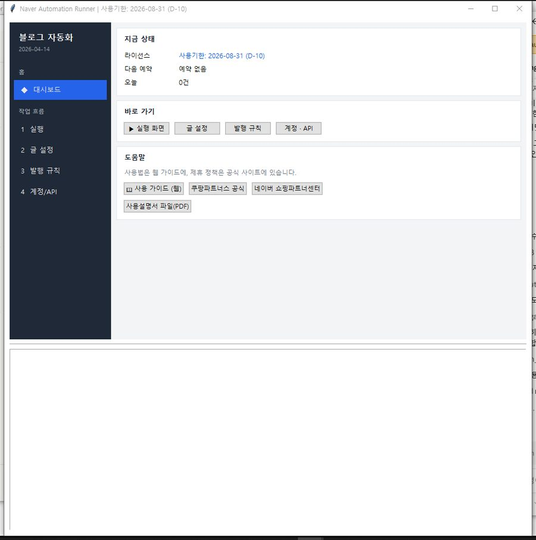
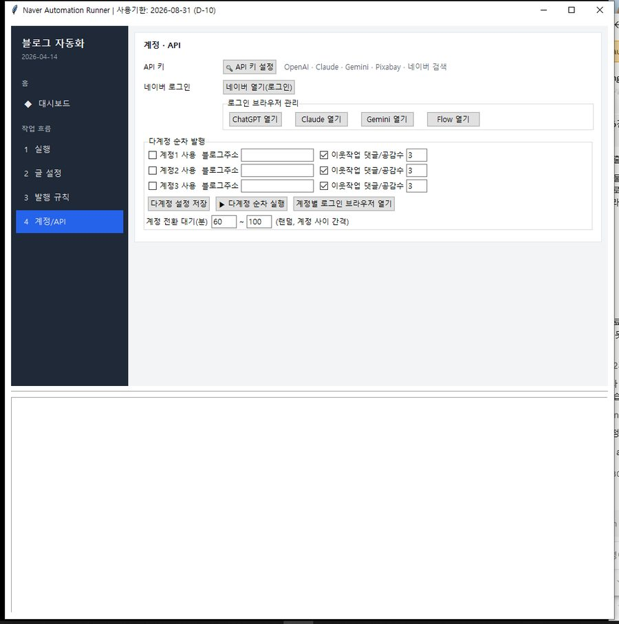
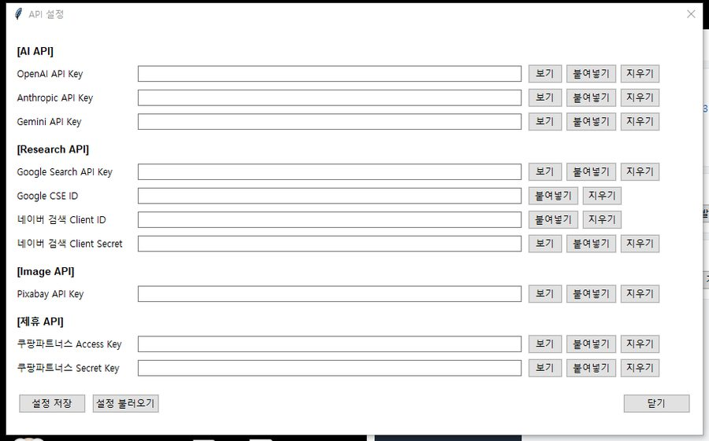
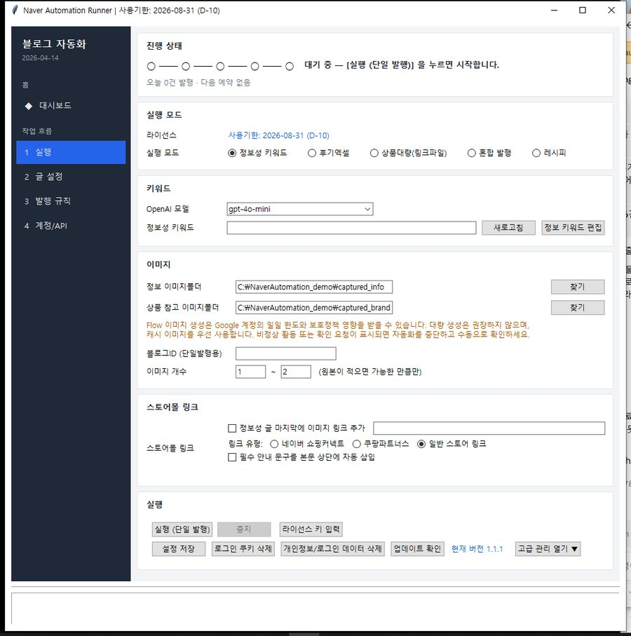
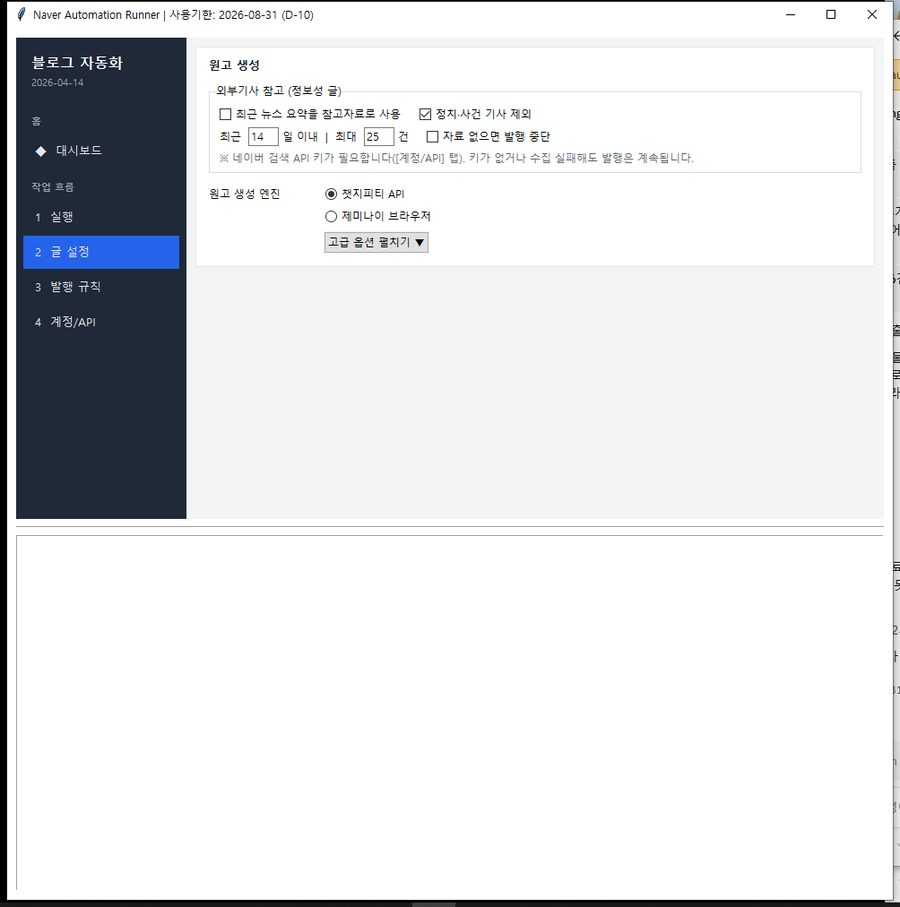
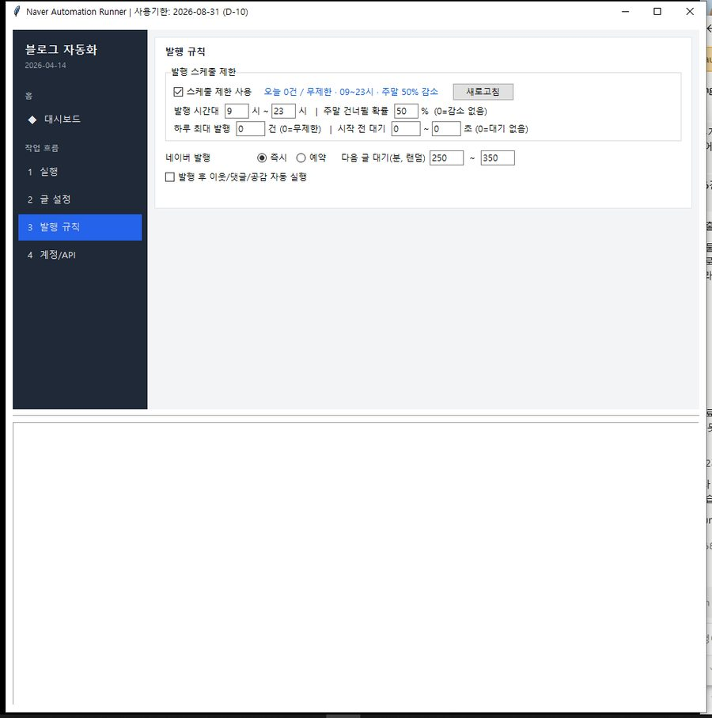

키워드만 넣어두면 글을 쓰고 사진을 붙여 블로그에 올려 드립니다.
처음 한 번만 설정하면, 다음부터는 [실행] 버튼만 누르시면 됩니다.
NaverAutomationUI.exe 를 두 번 클릭합니다.
왼쪽 [4 계정/API] → [🔑 API 키 설정] → OpenAI 키 붙여넣기 → [설정 저장]
같은 화면의 [네이버 로그인] 을 눌러 한 번 로그인해 둡니다.
왼쪽 [1 실행] → 키워드와 블로그ID 입력 → [실행 (단일 발행)]
아래 다운로드 에서 ZIP 파일을 받습니다.
ZIP 을 우클릭 → 압축 풀기. 고정된 폴더에 푸시는 걸 권합니다.
예: C:\NaverAutomation\
폴더 안에 이 파일들이 있으면 정상입니다.
NaverAutomationUI.exe <- 이걸 실행합니다
RunAllWorker.exe <- 발행 담당 (직접 실행하지 마세요)
NaverAutomationUpdater.exe <- 업데이트용
version.txt
templates\ manual\NaverAutomationUI.exe 를 두 번 클릭합니다.
프로그램은 라이선스 키가 있어야 켜집니다. 키가 없으시면 프로그램 안에서 바로 신청하실 수 있습니다.
프로그램을 켜면 대시보드가 먼저 나옵니다. 지금 상태를 한눈에 보는 화면입니다.

| 지금 상태 | 라이선스 남은 기간 · 다음 예약 시각 · 오늘 발행한 건수 |
|---|---|
| 바로 가기 | 각 화면으로 한 번에 이동합니다. |
| 도움말 | 이 가이드와 제휴사 공식 사이트를 바로 엽니다. |
| 1 실행 | 무엇을 쓸지 정하고 실행하는 곳. 평소에 쓰는 화면입니다. |
|---|---|
| 2 글 설정 | 어떤 AI로 글을 쓸지 정합니다. |
| 3 발행 규칙 | 언제, 몇 건이나 올릴지 정합니다. |
| 4 계정/API | API 키와 네이버 로그인. |
글을 쓰려면 AI 키가 최소 하나 있어야 합니다. 나머지는 없어도 발행됩니다.


| 키 | 필요 여부 | 어디서 받나 |
|---|---|---|
| OpenAI API Key | 필수 — 글을 씁니다 | platform.openai.com |
| Pixabay API Key | 권장 — 무료 사진 | pixabay.com/api/docs |
| Anthropic / Gemini | 선택 — 다른 AI로 바꿀 때 | 각 사이트 |
| Google Search / CSE | 선택 — 참고 자료 수집 | Google Cloud |
| 네이버 검색 Client | 선택 — 없어도 발행 정상 | developers.naver.com |
| 쿠팡파트너스 | 선택 — 쿠팡 자동 모드 | 파트너스 > 도구 > Open API |
[ChatGPT 열기] [Claude 열기] [Gemini 열기] [Flow 열기] 버튼이 있습니다. API 키 대신 웹사이트에 직접 로그인해서 글을 쓰게 할 때 씁니다. 버튼을 누르면 그 사이트가 열리고, 거기서 한 번 로그인해 두면 프로그램이 그 창을 씁니다.
[4 계정/API] 화면의 [네이버 로그인] 을 누르면 크롬 창이 열립니다. 평소처럼 로그인하시면 됩니다. 처음 한 번만 하면 됩니다.
같은 프로필을 쓰는 창이 열려 있으면 잠겨서 실패합니다.
크롬 창이 새로 열립니다.
2단계 인증이 있으면 그것까지 마칩니다.
프로그램이 로그인 정보를 기억합니다.

정보성 키워드 를 고릅니다. (처음에는 이게 가장 쉽습니다)
쓰고 싶은 주제를 넣습니다. 예: 여름철 제습기 관리법
본인 블로그 주소의 아이디입니다. blog.naver.com/여기
처음에는 1 ~ 2 정도로 시작하세요.
크롬이 열리고 3~5분 정도 걸립니다.
정보성 모드에서만 보이는 [정보엑셀 경로] 줄입니다. 메모장 대신 엑셀로 관리하는 방법이며, 키워드 옆에 상품 링크를 같이 적어둘 수 있습니다. 글 끝에 그 링크가 들어갑니다.
| 칸 | 무엇을 적나 |
|---|---|
| 정보성키워드 | 쓰고 싶은 주제. 예: 여름철 제습기 관리법 |
| 상품링크 | 글에 넣을 상품 주소. 비워두셔도 됩니다 — 그러면 링크 없이 나갑니다 |
[찾기] 로 엑셀 파일을 고르고, [열기/편집] 을 누르면 그 파일이 바로 열립니다. 줄을 채우고 저장한 뒤 실행하면 위에서부터 하나씩 꺼내 씁니다.
| 유형 | 어떤 글 | 준비할 것 |
|---|---|---|
| 정보성 키워드 | 주제를 설명하는 정보 글 | 키워드만 |
| 후기엑셀 | 상품 사용 후기 | 엑셀에 상품명 + 링크 |
| 상품대량(링크파일) | 여러 상품을 순서대로 | 상품 링크 목록 파일 |
| 혼합 발행 | 정보 글과 후기 글을 섞어서 | 비율(%)만 정하면 됩니다 |
| 레시피 | 요리 레시피 형식 | 요리 이름 |
싹된다(쿠팡 로켓배송 프로그램)를 함께 쓰시면, 블로그 화면을 따로 익히지 않아도 싹된다에서 버튼 하나로 글이 나갑니다.
| 순서 | 어디서 | 무엇을 |
|---|---|---|
| 1 | 싹된다 · 광고 · 홍보 | 팔리는 상품을 고르고 글 조건(글 수 · 사진)을 정합니다 |
| 2 | 싹된다 · 맨 위 [위치 지정] | 처음 한 번만 — 이 프로그램(NaverAutomationUI.exe)이 어디 있는지 알려 줍니다 |
| 3 | 싹된다 · [블로그로 바로 발행] | 후기 엑셀을 만들고 이 프로그램을 켭니다 |
| 4 | 이 프로그램 | 받은 엑셀을 읽어 바로 발행을 시작합니다 |
같은 내용이 싹된다 화면에도 그대로 표시되므로, 어느 쪽을 보셔도 됩니다.

따로 켜고 끄실 것은 없습니다. 발행 직전에 프로그램이 스스로 다듬습니다.
사진은 [1 실행] 화면의 이미지 칸에서 정합니다.
| 정보 이미지폴더 | 정보 글에 쓸 사진이 든 폴더 |
|---|---|
| 상품 참고 이미지폴더 | 후기 글에 쓸 상품 사진 폴더 |
| 이미지 개수 | 한 편에 몇 장 넣을지. 예: 1 ~ 2 |
상품 링크를 글에 넣고 싶을 때만 씁니다. 안 쓰셔도 됩니다.
| 일반 스토어 링크 | 기본값. 링크만 넣습니다. |
|---|---|
| 네이버 쇼핑커넥트 | 네이버 브랜드 커넥트 링크를 쓸 때 |
| 쿠팡파트너스 | 쿠팡 수익 링크를 쓸 때 |
쿠팡파트너스 정책과 가입 방법은 공식 사이트가 가장 정확합니다. 프로그램 대시보드 → [쿠팡파트너스 공식] 버튼으로 바로 갈 수 있습니다.
partners.coupang.com · 네이버 제휴는 브랜드 커넥트

| 발행 시간대 | 이 시간 안에서만 올립니다. 예: 09~23시 |
|---|---|
| 주말 감소 | 주말에는 건수를 줄입니다. |
| 일일 상한 | 하루 최대 몇 건까지 올릴지 |
| 시작 지연 | 실행 후 조금 기다렸다 시작합니다. |
| 네이버 발행 | 즉시 발행 / 예약 발행을 고릅니다. |
[1 실행] 화면 맨 위 진행 상태 에 지금 어디까지 왔는지 나옵니다.
● ━━ ● ━━ ● ━━ ○ ━━ ○ 3/5 원고 쓰는 중
| 1 브라우저 | 크롬을 준비합니다. (몇 초) |
|---|---|
| 2 로그인 | 네이버 로그인 상태를 확인합니다. |
| 3 사진 | 넣을 사진을 고르고 다듬습니다. |
| 4 원고 | AI가 글을 씁니다. 여기가 가장 오래 걸립니다 (1~3분) |
| 5 발행 | 네이버에 올립니다. |
[1 실행] 화면 아래쪽의 [업데이트 확인] 버튼을 누르면 새 버전이 있는지 확인합니다.
맨 아래 진행 기록을 봐주세요. 이유가 한글로 나옵니다. 자주 나오는 것은 두 가지입니다.
네이버 글쓰기 화면이 덜 열린 상태에서 진행된 경우입니다. 크롬 창을 전부 닫고 다시 실행해 보세요.
1 ~ 2 로 낮춰보세요.사진이 없어도 글은 정상 발행됩니다.
[로그인 쿠키 삭제] → [네이버 로그인] 순서로 다시 해보세요. 크롬 창이 여러 개 떠 있으면 전부 닫고 하시는 것이 좋습니다.
프로그램 폴더를 다른 PC로 옮기면 보안상 로그인 정보가 초기화됩니다. 같은 PC 안에서 폴더 위치만 바꾸는 것은 괜찮습니다.
API 설정 창 왼쪽 아래의 [설정 저장] 을 눌러야 저장됩니다. 창을 그냥 닫으면 저장되지 않습니다.
프로그램이 제목과 본문이 어울리는지 검사해서, 안 맞으면 올리지 않고 멈춥니다. 그래도 어색하면 키워드를 더 구체적으로 적어보세요.
예: 제습기 → 여름철 제습기 관리법
한 편에 3~5분이 정상입니다. 4 원고 단계에서 1~3분 머무릅니다. 10분이 넘어가면 진행 기록을 확인해 주세요.
화면 아래 진행 기록을 캡처해서 보내주세요. 어느 단계에서 멈췄는지 보면 알 수 있습니다.
최신 버전은 v1.1.5 입니다.
버튼을 누르면 릴리스 페이지가 열립니다.
Assets 아래의 NaverAutomation_v1.1.5_...zip 을 클릭하면 받아집니다.